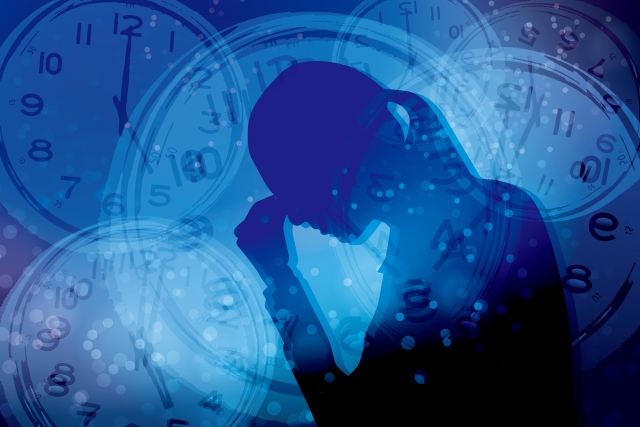

家族の問題。特に「親子関係は連鎖する」という言葉を聞いたことがあると思います。子どもに対する虐待も親から子へ、子からさらにその子へと繰り返される現象があるからです。
虐待は極端な例ですが、親のあり方や行動が子どもに伝わり子どももその影響を強く受けながら、ある種のパターンが子孫へ伝わっていくことは事実です。
そのパターンには良い影響もあれば好ましくない影響もあります。
だから親は自分がどのような影響のパターンを「親」から受け継いでしまったか自覚しておくことが大事です。なぜならそれは無意識に子どもへ「受け渡し」てしまうものだからです。
親はそうとは意識せずとも、自ら受け継いだ「親のふるまい」「価値観」を無批判に我が子に押しつけていることが多いのです。
「自分が親からどんな子育てをされたか」
「自分の中にある行動（思考）パターンの何が親から受け継いだものか」
それらをいま一度自覚することで現在の自分の生き方の問題点に気づいたり、子育てや人間関係の改善にもつながるというのが私の考えです。
それでは、代表的な「負のパターン」を見ていくことにします。
1.子どもを認めない親－心に怒りを抱える－
子どもをなかなか認めようとしない親がいます。子どもが頑張ってもその努力を認めない。たとえ何かテストで1番を取ったのにホメるどころか「成績だけ良くてもダメだ。人間性が大事なんだ」ともっともらしいことを言って子どもを認めない。そういう親がいます。
これはその親自身も親からそのように扱われてきた可能性が高い。子どものころ一生けん命やってもなかなか親から認められず悲しい思いをしたはずです。
あなたがこのタイプかどうかは次のように振り返ってみれば分かります。
日常生活であなたは人からホメられたときどのように反応をするでしょう。
素直に「嬉しいなあ」「ありがとう」と言いますか。それとも「いえいえ私なんて・・・」と少し困惑気味に答えるでしょうか。
人から仕事ぶりや性格、容姿をホメられても居心地の悪さを感じたり、どう対処してよいかわからずつい拒絶（！）的反応を繰り返しているのなら、あなたは「自分を認めない」タイプです。
そう。子どもを認めないのは自分を認めないことの反映なのです。
こういうタイプは一見謙遜しているようですが実は根底に「怒り」を抱えています。だからちょっとしたミスを指摘されたり、クレームを言われるとムキになって自己弁護をしたりするのです。
良く言えば、努力家でマジメといえますが実は「こんな自分は誰も認めてくれない」という不安や恐れを抱えているのです。
何か立派な業績や業務を果たさない限り「ありのままの自分」など誰からも愛されないという恐れです。
もしあなたがこのタイプなら、まず自分の根底－心の奥底－に「怒り」の感情があるということを認めましょう。「どうしてもっと認めてくれなかったんだよ。自分だって一生けん命やったんだ！！」という思いです。
それは無条件に愛されなかった悲しみであり「どんな自分でも私のことを愛して欲しい」という叫びです。
そのことを自覚した上で親のことを許しましょう。親もきっとその親から認められなかったのです。あるいは未熟で子どもの愛し方を知らなかったのでしょう。だから許すのです。そして「子どもの自分」を「今の自分」が認めるのです。
これが一種の浄化となります。
感情を開放し親を許す
自分の感情（怒り・悲しみ）に気づく→親を許す→自分を認める
こうして傷ついた自分への「癒し」が起こります。自分をまずいやし認めることが大事です。
このタイプの人は時々「これからは子どもを認めいていこうと思います」と言ったりしますが、自分を認めることのほうが先です。
なぜなら何度も言うように、子どもを認めない人は無意識に我が子へその態度を投影してしまうものだからです。
従ってまず、自分（の奥底の感情）に気づく→親を許す→自分を認める→子どもを認めるという順番になります。
この順序で感情の解放や親との「和解」が起こらない限り、自分を認め分身である我が子を認めることはできません。頭で「子どもを認めよう」などと思ってもムリです。
ここでは特に「親との和解」が重要です。しかしこれは意外に難しいかも知れません。
実際「私は親がどうしても許せない」と言う人がいるからです。「兄弟姉妹と比べられ自分だけいつも否定されてきた。」そう感じていたり「あのとき親の発したひと言がどうしても許せない」と言う人もいます。
気持ちは分かります。実は私もこのタイプで「親から認められない怒り」を長い間抱えてきたからです。
しかしそういう人に言いたいのは、いつまでも親への「怒り」を握りしめることはかえって親への執着を深めることだということです。
つまり未だに親への「愛」をねだっている。
だからこの「怒り」という親へのこだわりを手放しましょう。自由になるのです。手放されない限りあなたは今でも親に囚われていることになります。
手放す最善の方法は許すことです。
想像して下さい。あなたが幼いころの親の様子はどんなだったでしょう。若くて未熟だったはずです。あるいはあなたがあまり得意になって有頂天になるのを恐れただけかも知れません。
そうです。あなたの親も1個の人間として不安や恐れを抱えて生きていたのです。
そう考えればあなたの見方も変わるのではないですか。等身大の人間として親を見て、良い点悪い点もあったと納得できてこそ親の呪縛も乗り超えることができるのです。
そうすればあなたは滞在意識にためこんだ「自分はダメな人間だ」「自分は価値がない」という自己否定に気づくことができます。気づけば一転して自分のことも認められるはずです。
「何だかんだいって自分もそれなりにガンバって来たな」と。
事実あなたは頑張ってきたのです。今こうして社会人として親として立派に生きているではありませんか。そんな自分に気づき認めることができれば、人間関係や日常生活にも好ましい変化がでてきます。
そして結果として子どもとの関係も良好なものになるでしょう。
親の影響については次回も続けます。